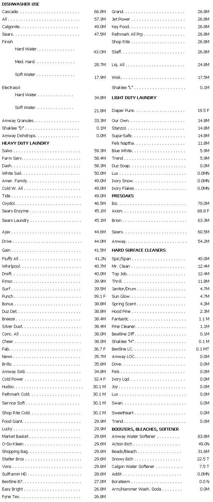

Nearly everyone is aware of the smog we breathe, the oil fouling our beaches and the mountain of "one-way" containers filling the canyons, all the major ecological problems. As desert residents, however, we have less contact with a problem which has reached gigantic proportions in the lakes and rivers of the East and the Midwest-eutrophication. Many lakes are dead or dying, and they are being killed by our "cleaner than clean" clothes, dishes and homes. California, for its scarcity of lakes, is not immune.
In 1965, detergent manufacturers began producing "bio-degradable" products. This changeover eliminated a major pollution eyesore-detergent foam on rivers, but biodegradability is not enough. We must now be concerned with the effects of the elements into which the new biodegradable detergents decompose.
When the growth of aquatic plants is overstimulated they seasonally die and rot, using up the oxygen dissolved in the water. Game fish die of oxygen deficiency and are for a time replaced by scavengers. As the plant growth cycle periodically repeats, the lake loses all aesthetic value. Finally the water itself is displaced by the accumulating vegetation and its decay products. The lake first becomes a bog; later dry land. This process occurs naturally as lakes mature, age and die. It has been estimated, however, that the eutrophication which has occurred in the past few decades because of man's pollution would require thousands of years under "natural" conditions.
The availability of plant nutrients controls the rate of algal growth and directly affects the rate of eutrophication. A plant might require 33 units of carbon, ten units of nitrogen and one unit of phosphorus to attain one-unit of growth. If there were 66 units of carbon, and 20 units of nitrogen available, it still could not grow until it found a second unit of phosphorus. Nitrogen is, in general, not the critical growth-limiting nutrient, since blue-green algae can fix nitrogen from the air (air is 80 per cent nitrogen). Upon death and decay, they may supply enough nitrogen for growth of other kinds of algae. Thus phosphorus, which is not widely available in nature, is the most critical nutrient.
Phosphorus enters the water from many sources; land runoff, soil erosion, waste from animals and plant decay and municipal sewage. The relative contributions of phosphorus from these sources will vary with the watershed. Even if the main source of nutrient phosphorous in rural areas is agricultural runoff, on the average human waste contributes 1.4 pounds per person per year and detergents contribute from 1.5 to 2 pounds of phosphorus per person per year to surface waters. It has been estimated that from 50 to 75 per cent of the phosphorus in lakes and rivers is from detergents. The elimination of this source would bring about an immediate and massive decrease in the rate of eutrophication.
Detergents cut grease and suspend dirt. Heavy-duty detergents used in washing machines generally contain a "surfactant" or the actual detergent, plus one or more phosphate "builders," "optical brighteners" and fillers. A builder doesn't clean by itself, but works with the surfactant to greatly improve product efficiency. Phosphate builders soften water, help suspend dirt, emulsify oil and grease and contribute to the reduction of germs on clothes. They are unquestionably effective and have been widely used for 30 years. However, about 76 per cent of the phosphorus in detergents, 370 million pounds of it, ends up in surface waters, and the problem is getting worse. Not only is the amount of detergent used annually increasing, but the amount of phosphorus in each product is also rising.
The detergent industry contends that dissolved phosphorus, at least that contributed by detergents, has not been proven to be the cause of eutrophication. However, they did not object to the statement of the Joint Industry-Government Task Force in 1969 that " . . . phosphorus is the most critical element with respect to algal production." Algae growth is, of course, the key process in eutrophication, and in pollution control the final proof is often unfortunately inconclusive until it is too late to reverse the damage.
The industry also claims that when the phosphorus level reaches ten micrograms per liter, further additions of phosphorus will not result in increased eutrophication. They are misquoting a paper which offers that figure as an uncertain average phosphate level which can be allowed without danger of harmful growth rates. Since blue-green algae proliferate in any phosphorus-rich water, the addition of phosphorus beyond any "magic number" will probably result in increased growth.
"There is growing technical belief," the industry claims, "that total removal of phosphates from detergents would have no effect in reducing cultural eutrophication," and there is "no evidence" that reducing the phosphorus content would lower algal growth rates. Experiments have shown that deprivation of either phosphorus or nitrogen retards the growth of green algae and that reduction of phosphorus by 99 per cent curtails the growth of blue-green algae almost completely. The New York State College of Agriculture recently showed that small lakes recover almost completely a year or so after nutrient addition stops. Another researcher has stated that there is no doubt in his mind that if phosphates were eliminated from detergents going into Lake Erie (one of the worst cases of eutrophication) the rate of eutrophication would be reduced. The Soap and Detergent Association's position appears supported only by one paper which was commissioned and paid for by that association. To the manufacturers contention that phosphate detergents are essential to maintain cleanliness and sanitation, it should be noted that cleaning standards were well out of the dark ages before 1940, when synthetic detergents became widely available. They also claim that there are no suitable replacements available for phosphates.
Consumer's Institute has found that pre-washing with a small quantity of synthetic detergent, followed by washing with a soap works well in either hard or soft water if the clothes are not heavily soiled or made of synthetic fibers. An equally good result over the same field of application can be obtained by washing with a mixture of detergent and soap.
Sodium nitrilotriacetate (NTA), an organic nitrogen compound, is an effective substitute for phosphates. NTA is reportedly about 18 times as effective a water softener as sodium tripolyphosphate (STP), the most popular phosphate builder. Less NTA would therefore be required. Adding a silicate along with the NTA gives the new product soil suspension properties comparable to current detergents. NTA is believed to be nontoxic and biodegradable. It is currently in use, and the annual production could be easily raised.
A possible ecological objection to NTA is that nitrogen is also a plant nutrient. It should be noted that 100 pounds of NTA, which has the water-softening ability of 150 pounds of STP, would contribute only five pounds of nutrient nitrogen to the water as compared with 25 pounds of phosphorus contributed by the STP. Since nitrogen is the least critical, most plentiful nutrient, no change in the amount of available nitrogen would have as great an effect on the ecosystem as the addition of large amounts of the more critical, less naturally abundant phosphorus.
Organic polyelectrolytes are other possible substitutes for STP. They contain only carbon, hydrogen and oxygen and are supposedly equal to STP in water-softening ability and superior in cleaning ability and soil suspension. They are biodegradable and not significantly more expensive than STP.
Since one of the main functions of phosphates is water softening, it is possible to reduce phosphate pollution now. Reduced-phosphate products should be marketed in areas with soft water and across the country for use by water softener owners. Heavily "built" detergents are really necessary in less than half the American homes, and many consumers are almost forced to buy phosphates they do not need. Detergent boxes do not reveal phosphorus content or any other ingredients, making it impossible for even an aware buying public to purchase products suited to their water. Until phosphate-free detergents are widely available, both low and high phosphate detergents, tailored for hard or soft water and properly labeled, should appear on grocers' shelves.
Economics Laboratory does vary the phosphate content of their dishwasher products, Finish and Electrasol, to match the water conditions in various marketing areas. Proctor and Gamble sells Duz soap only in areas with soft water, marketing a synthetic detergent under the brand name "Duz" in other areas. Soaps are generally phosphate-free. Days Ease Home Products Co. ran Earth Day ads in major newspapers promoting their phosphate-free laundry additive, "Addit." (They should have said that you can use 1/2 cup of the liquid instead of rather than 1/4 cup added to, phosphate detergents.) Addit contains a "small amount" of NTA and has been confirmed phosphate-free by the Students for a Better Environment at Northwestern University. Three direct-distribution companies, Amway, Bestline and Shaklee, also market some essentially phosphate-free detergent products.
The Soap and Detergent Manufacturers Association has rejected the whole notion of listing ingredients. They claim that surveys have proven their " . . . complete conviction that the average housewife seeing a higher percentage content will automatically equate this to better cleaning." The survey seems meaningless since. the industry has always concealed from the consumer all useful information about the presence and function of detergent ingredients. Despite the fact that many manufacturers had already furnished phosphate content information to the government, I was generally unable to obtain this same information from companies directly. My letters, which asked about phosphate content, were usually answered with a "fact sheet" explaining biodegradability and minimizing the role of detergent phosphate in eutrophication.
The cost of eliminating phosphates from detergents is only partially known. Various experts have concluded that the cost of polyelectrolytes would be reduced in mass production. There is no foreseeable way in which the price of NTA could be lowered, however. Either of these alternatives would cost more than phosphate builders. The expense of new equipment to manufacture phosphate-free detergents cannot be known until the exact formulae are determined. It is safe to predict that the new product will probably be more expensive than current detergents. A consideration often overlooked in assessing the "cost" of a product, however, is the damage it does. What price do you put on irreversible destruction of the natural environment? Taxpayers do not often relate "externalized" charges, such as taxes to build and operate municipal sewage-treatment plants sophisticated enough to remove phosphates, to the cost of their favorite high phosphate detergent. We will pay the price; be it in the form of more expensive detergents, taxes to clean up the damage when possible, or in the irreversible destruction of our favorite waterways.
The detergent industry denies that there is any conclusive proof that phosphates cause eutrophication and denies that it can safely remove phosphates from detergents. The only possible solution to the eutrophication problem, they claim, is removal of all nutrients during sewage treatment. True, we must progress as rapidly as possible with advanced sewage treatment, but this is not an alternative to phosphate-free detergents. The changeover to phosphate-free detergents can be accomplished much faster and at much less cost than the immediate construction of sufficient sewage-treatment facilities. Wasted time means more algae-filled lakes and more irreversible damage. Consider also what would be done with the millions of tons of phosphorus once it was removed from the effluent. Disposal of it would cause further land, water and air pollution which could be avoided if the phosphorus were not present in the effluent in the first place.
It is not surprising that, although the problem has been known in industrial and governmental circles for some time, there has been no progress in combating eutrophication. At hearings in 1969, representatives of both the Interior Department and the Federal Water Pollution Control Administration (FWPCA) testified against immediate removal of phosphates from detergents. The Joint Industry-Government Task Force on Eutrophication, which was originally formed to secure the cooperation of industry with government to remove phosphates from detergents, has actually served the opposite purpose. This reticence has caused considerable delay. Fortunately, the truth about the connection between detergent phosphates and eutrophication is becoming known. On April 14, 1970, the Committee on Government Operations in the House of Representatives published a report entitled "Phosphate in Detergents and Eutrophication of America's Waters," on which much of this article is based. Available from the Superintendent of Documents, US Government Printing Office, for 40 cents, it is well worth reading. The report contains eight recommendations:
1. Phosphorus should be eliminated from all detergents by 1972, subject to extension only to prevent detergent shortages.
2. Detergent manufacturers should promptly begin substantial reduction of phosphate content.
3. "Enzyme" pre-soaks should be removed from the market. (They actually contain two-thirds phosphate.)
4. Pending complete elimination of phosphate builders, detergents should be formulated for hard or soft water and labeled with proper and informative instructions.
5. The Federal Trade Commission should require ingredients to be listed on the labels, in order of decreasing predominance. Unless the product is phosphate-free, it should plainly state whether it is for use in hard or soft water.
6. The FWPCA should conduct an education campaign to inform consumers of the pollutional effects of phosphates and other detergent contents.
7. The present Joint Industry-Government Task Force should be replaced by a "broadly representative action group. "
8. The FWPCA should support research into low phosphate and phosphate-free detergents.
It should be noted that these are just recommendations; compliance is not required. The report also contains a list of products and their phosphate contents as furnished by the manufacturer and as determined by the FWPCA. That list has been combined with others from the University of Toronto and Northwestern University, all of which are in general agreement, to produce the following more complete listing. In the case of low or phosphate-free products confirming estimates by sources other than the manufacturer are also noted. Source code is; Manufacturer's Estimate, M; FWPCA, F; University of Toronto, T; Northwestern University, N.
|
|
|
 |